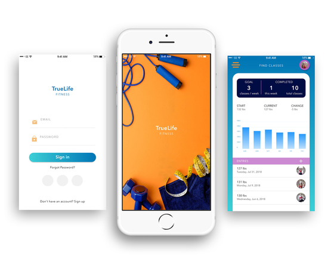
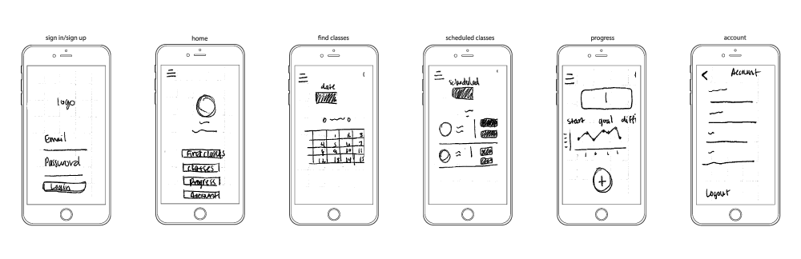
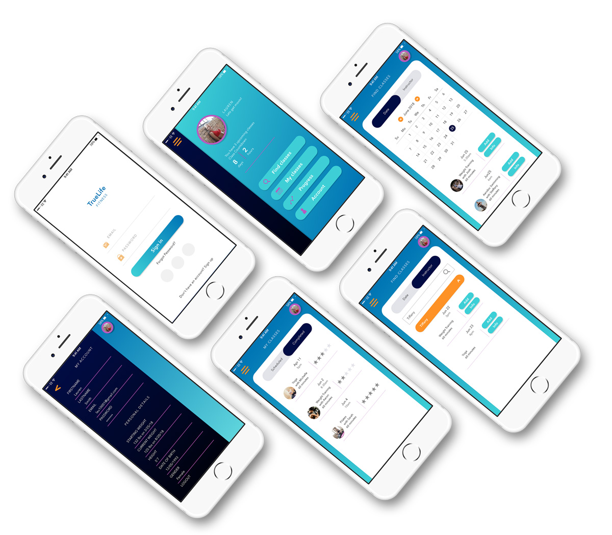
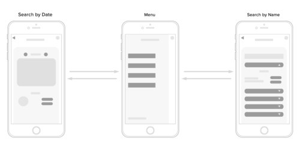
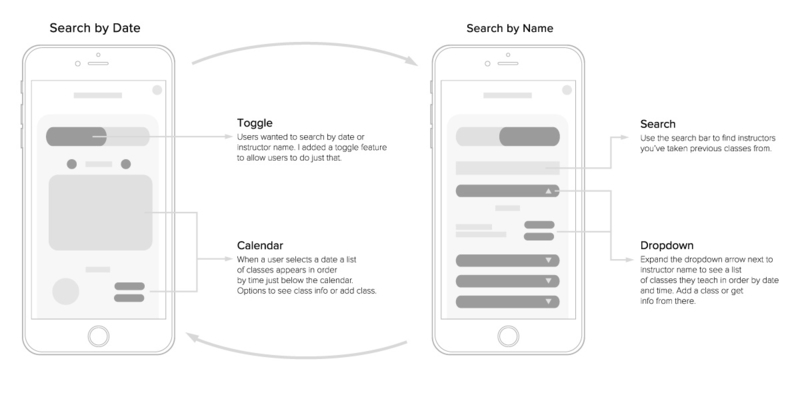
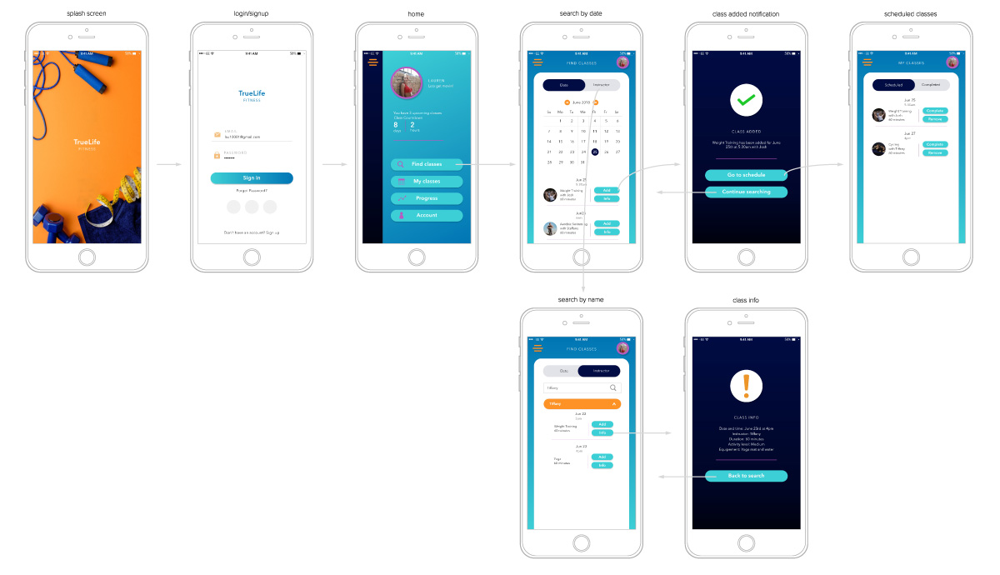

TrueLife Fitness
TrueLife Fitness is an app design concept I came up with to simulate a real-world design process through prototyping and user-testing.
The idea behind this concept is that a fitness company, aka "TrueLife Fitness" wants to have an app made for their members. In the app they can search for, book and manage their classes and track their progress.
- Rating:
- Completed: 30 Nov 2018
The Challenge
In my early design phase I was focused on six main components. A login process, a user home screen, scheduled classes, account details and how users could search for classes by date. Here is a rough look at some wireframes I envisioned each component to look like.

Research
CONDUCT USER SURVEYS
To better understand the users experience and their perspective, I created a survey and conducted interviews to get feedback on my concept of searching for fitness classes in the app. I recruited 25 individuals who had varying experience with popular fitness apps on the market today.
Together, we walked through the process of searching for classes while getting their opinion on what their experience was like along the way. In concluding the survey, the results revealed that users wanted to be able to search for fitness classes not just by date but also by instructor name.

User Testing and Flow
Round 01
In my initial flow I had users navigate from the search-by-date interface to a menu where they could then select a button that would take them to the search-by-instructor interface. However, this flow was repetitive, a waste of time for the user, extra code for developers and potentially more cost for the company.

Round 02
Rather than making users backtrack to a menu, I eliminated the extra step by using a toggling method to switch back and forth from each search screen. This made it more efficient and simple for the user to look for classes.

Round 03
In the third round I pinned down a final design and solved the last issue users had. After booking a class where could the classes be found? To answer this question, users could now go directly to their booked classes via a button on the class added notification screen.

Final Flow
For final flow testing I ran through the design and brought back the original 25 users who participated in round one to see if there were any more opportunities for improvement. The response and feedback I got back from my users was that it was intuitive, simple and created a sense of trust. The visuals and added prompts made it easy to follow and fun to use.